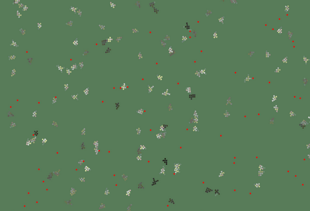

![Low-res preview](data:image/webp;base64, UklGRtAOAABXRUJQVlA4TMMOAAAvMUAKAAGFjaREEQIrp/Zf8NtCRP8nICHYpTEekLarJAugLoRDOb22Js1MM9ZaIPU0LyLi1Fw3CTgBh/+BG9W2VefwscPlcDnxlJn/aFKFlO5SuY7DcWvbqoLrzcnKx6X/mijAnSEjAkeSbdVNixUx8xGDmXH/K3HkyOVIYf8DjbpF4YJGOxhEuBEK3QqWQeqpAUeAUDAXAvdAIgFwCOwoxX6TRAmBeyAKClI85wG6hxbWP7vO03SwZUZOLESERDjg/vAdTn6uZ/d/steyHh2JINFwpPuZ+8v9/n58Lg8pc+/0XEoACVTC/df983e/6s3wnKGZRcoQCoT+iZChDMeO8IAJ+435KMC8hX2rhL7/zfeojjl5J0SlLGWjNEo3SCujW7fGjll/bRciqQuKGzAiT7oFqIzKEPKUbnmuca2cjwg819rkSJJtW/8vImrII7IwBqu1mosAjHlYbK1FzGJgtRYRGOOVICLd3VRV5GfDk609jiTZtgVAuKiqmYWZJ+eZpTVWffVgtXSVVwv4WnVa45yvcLcwN1MVUWGA58i2Vdu2bSulXGrvYzOjAKzBFmKHt4Rboy0BwwwxrNFayRG/+P7fJJolfM/XV5IFpu6Yn8j3JRLLPP2p757hlOu/61aRGa6wB978fxePRsdNWtPtBGPC+Yjv9UxeH7dV4zx8dpXQ//0tVEAI/H/lw0vbJRv49v/MIVEBRnRsQSlCAEqggEEWi+Fxsa5MpiSVraFbt/cxP7phQkTCEJOsskjOCexjFp98ZJ1H3nyYrmbCwNiBhGBYuyApVg1NECgJMzg3Na7bghTVS9RFQubg0thO3obVkGY9NwK56V7CNEv+j0atlQh0dNxpHtM54sz/dn+/XOb1/42MMWey9XNC7uBJSZt1CuogBSQAguqaSUKOmGgJp0kKAAghfWLoQDWOz3B92JgpzdA01WesNKtuLAcaes+PyQDAycazYwRrvnmd+dIUFjXGELWaVmlAQQ/retJcCgQW1Ql2oiHNM65VF1VNINyFA8lhCe/onHVjvjFkIekkTtk9zoRT+qkU2AK7bB4w1DnO1COzX2d3O7NlPTyDgx34xcA5Eu5A68ogVlELcKmwifTRyqlqNYiCpaEwwrjdKpPMBLoMz9OWMrE4l0m7zdwOdduVvOmZpYc9a7iLcGvrWRYtJnrUArqYKZasCGr/7WlFdjNYsvWwSuLBRKdzVFRaVaIUmLKgIKrbWGUMshCh9WXCrnc9hQ8BO4bb1tU1eNoiGKa05Qk7YLJo+XkI5/UWHSJWJCAyPszVa50DE4jrWBvvBgrMCx+cbhXUNGOLzIJ5jokVaXa7aHF8cx2pF6mOb/JmuNrs+ZwJHKgv0znBNTp2ymjo7WlIxN37hknPsAsAKAbh0m2zE2tyE5tk+RQqKmlRvYx6WCS4HIEOZGF7Dd9Sdadk1u90OE/XPNyJEWLU9evZWT9s8zlf67cJgNMkgLtNgxLD+2w4PJQrBihEKoG1ajc0HBIQjagR8Lq/jo+HLBmKws4c6lSSNvK4jLe8ajbJzexlpnW4J+y2rt9xtDVX3ajPA0CSN6zpoqo+wDoZNXiiqVGi0GhAghO5KCNECujFDpI2klUAEpo/XJL3onXaDtCf2fp9I6Lm/Y+sMi51GfbEXU9Y14l10TnhzAfAsMuaUoEEOl5BhNNdFfSWBVZj2lyc19TDskU6BwSIwVQ2s0QF5NRH2xxTIJ2WB5J1tOR+n1b30+5dy2wHWo4nrcNJ7uLqdrpQGahJWprhM8SlhgR1gijg3O/WJ91tKhgAzU7URyQguEgEwA1p5PZhhxUIi0kPWKV0ZLE2X3dZqnq9cKOZ3RDuJ8qQkfIxvOwXg416fP9uay9I7aOArI8fw4x1aB7mmJBOieo4CZTZbCZgDzggABFioKdk0Tx+s4oA3S/UeSuJctiCog9s2CZqjOFEjuaT4Ltnm3/q38dKt7MXnI/g/pKv9uefvlf+9On44/+fWw7LWDksRV6rPhMwtIrfWXxha2IwEiUxSwTRSQYpNN/2qoGG+PoddwHXOOhahflWHwjHmjP4Znd/DvOs0xOPw23qN3/4gL/5YHmTv/1D3R7415s362/+cnv59/NtaDMlhmrZezFpBDeBjJkXT2Hl4Ywoze/xGe298XCsF333D4Ji2Gabf9/u2rJe4hZ0HHWDgavMOrzs2W7ETepReRm3uf7gz1Z+HMvH9vRGH7z5lP9jeP319s0VXm44/y7SsQdIC3MZZZ0ZVdrYcVQ9bzFzb8ddp+nP3N9qJ5RpAcy0p2kT/031kv1wrQerCKbG1IbZlmSs10GGnJnEtj2/HT/iPf+j47u/1uW7L5YxY28n+Qc7vnxEScsw/qu+7NPtyxMxRYgNlu+4bpa0dmcB2Ot1+n2RoceDXTtEv+OhlrI24gwYSNQp1+EYIaeJrXMOUbHtwa3+1/P08/3iu7/2L36M07ccs3BqZOwN8J3hsEnrnXg9NFtCqQUZ3GIGNGpVAuThciQRcvagEm6uOYanJ0qiJGwQH0W2CaOcZu4aD5nz7otlnnyL7U8k3v6W8S8ccO3vf+5vvsfTVSNq6OAjO2y6NW3fcGG/FH2x4eKGzTKnbWNsWLKzTxwLROtym0KZXkgFgBqDXqLzpadkTIDN/3KnLB9OmdCFD5Yk0kumefnnVWY837F9/uTrPlxcJj7/Ng/vQ84DeDpO77C90u3xfri83c4GOfoR2JotCKGX3LZSmCn069OEffgGxKedlSChgQhgDiB1sGMJ3QW3/OH/hK4+Ct49bmPdfrLyXIpo1yfav/C5ihN5Iq8Hh47UFCI1b/n7tj7VnhacpU0QeuexeeiWMDCr5vm/JLsgmNxObkZzEWASErNaJbcqgWWSdy1pRuwGF/B6zq8VqSBhvWeM45I75CP0m5j3aMYs7LzVJm1hCzJz+t6pi9eS5JE3bCPLbzvYIupm00ay3uYGQ5+SBmsIdR5hbszRfJBq0kUVT6urRrXG7tP0+e0ThCbWY2KRQX6r7Ds0Rj52vz35vkLUobrC56ALk3Y8lB08XOaKTLLSQdoCwHLSIqatUZhKh7i25zTZOwEui6FUzTS0gTgr8AL1fZVeN/cY05uX5kklOSbnjvuN889+MH42trfAkfgZ9udjL3R3xXvwH4ZvQpu17dz1OHfGFl+vOdGjb3HMIVsPR3eIAsfrssuRJAgYU5scQhjDpelg9M4knbtnmU/J9b/wwzPexgNMKjH7l89/1j5UAxEN+BG+CfH3L68hl0o4Xp/fkkDxdSvinGM5rchO8aohotaqyAbqoMoRUAG46KChbGTXh8apXo/m0Vt8XeMuyouszD67lwCEADlVf/WL790+/haVTXwXXz9XX19W/pcn+FVbDLF2rggBIY2KpKfhhNi3BAwgyBGj0f0Ter/RdUlR76ihpqUVWlOgU8Wi9H2vhIan2sX8d5OPTzjSSHWq+yW9u3t3zUk8QxK8pW/K/QB6gUXqhQ/fcyBYOddUB3HpyM5TxGM4wNAdIs+3QQtEIgQJFtQhQAxPO3CvvDySkkh02WM162fmT5/i31/RfeOZ4E0x/dcX1t+Cv6TznvNy+IHSR6in3n+N94vYcYWO09rLTQlZUVBYek7CODAsc3d/J5IZgiQKpRhYl7CxzrQzwGltNuLSmRGJ3gAW49rO79R2UWcztp6Pzd9/lv76a/7LWM43vvOv/cOb/W6tyasbNpHkG54dAmhyJKpCK7UYLusAk3ZSns0EBIkbQqqpiCUQhzFHFrTJ0ThI8bTxGLpBOGXWD1+wawe21vfUtVfiyXV8cfL41uAgxWibFe2dxRlDEOryN9OrAgQSXT/1OKypRJxs98uxr+xNsMgbubOKpQQMeGtvpUCiDmyXeHVfhEYAYUeuWtVrc3C/6vSx5TzqbdO3ruut8HXGxTIURQJJJP16DeNVKi1ehdah05m1qqOWWtfU41m0FhnSTtU2khy5osQOBVUSEJLkCEumHfbg1lQKgCtVNG/i17x8tnwsRe+/+kOX8aPLJ89qt1+YJnPaEjScJic0ccr3tNZB5ckVNYynoZelj2IF2KBJayGDFkago6FAoCCEuBUGEdWL2Q0dqMQaSgYj7kK5rzUyoDCK6zmzp2b7uNjFBhbNNvkM671p13BlCTkmOdOCRhwfRtNYCkOiBQOhAsmqEJbFKgRICXY8Zqq9BTIMVU5QiAw0laddtrRZHEOOliDAfQZcYqc2LZn0j2/Ojp3osmF2Y0F1AonqmWwqXFMmMMUKiAauZIIAcyhSlkKKFYE3ZLWQOtnR1MqpzrC9G4ixyZRF39PEJWcmuTU6SUzlTJYMnfMtldCC2BSfca+dueqiwqk9uC870ky1Z2UD3tVPpym5SyygAAGiOCJj2mj3/mEhlhYnsrXbmUP9nypLvTmmgNJwOseHdyn66iy6rxS9HEllEQ4XV1aRPjPJWouBAsVap4g1uBlN5jlDzayoS6Ut8oBRs04K6eLMvToRcmyhqHGRHh7q0b4GvIT0uO4Y5qWDJQDry5wrhVvxQJc71uLWcHgdFkhidBhkBGA1HEIzMyVWCCdVZfckyKndApxiLoV20NkF6UVb2ol5k7bdynifYIERbG+8GzVjeGzmnph7JVVb7gpHmpnsSYFRBWAm3DQUFNgQNo5ojJyrXOGOqsK+rRN7TbSDmzfgAulWJkuRI2dNoShmsfdeFaLsWA/ByFg2r/e43b2QBShojgYkKMJhTiBuypwIY049FIaTRM0KHQVQCZyIM19uWaWng+uGH/bqvWGMFR5V7CSabjw+c9JIU0RafLNC++C2UXB3JiVgoIG4vGk1xBJhEaq1oAkmnbKEnsM5AaEemJ98BQ2yqtbmzPFgywMjnaXtDrzGJ+dAaFzSywhsHw0MqKuuZ4EUUIeFUj3JSat5QaLLpWhRC1GgRXZl6302RZIH40m91E4Yko+AwVCsOpVdTnn/K9oxVsRg4pyvHqIYFZfjffZnARrYEY9UZlRKFCEGnYgYiS0Way7YWD9QavJdSAokAta7i8y96YuLUe9EAgA=)

Let me take you through a journey of curiosity, growth, and cannibalism. One inspired by a video game and some questionable media..
About a year ago, I watched the Black Mirror episode "Plaything" (awesome ep. btw). I didn't think much of it then but it was my introduction to the idea of artificial life.
Obviously, even before then I'd seen the fancy YouTube videos, you know the "I made an ecosystem in Unity!" ones. But again, still nothing.
Until I saw a roguelike called Primordialis. It's this physics-based roguelike where you design your own creature out of cells (muscles, spikes, electric organs, etc.). And your enemies are also designed in the same way. Now I don't know if you see the vision but if you do, you already know what's coming.
While playing the game I just couldn't help but imagine a world with the same rules of Primordialis, one where the creatures can evolve not only their tiny lil brains but also their body.
So I became God.
The first day
In the beginning, there was nothing.
And before there was nothing, there was MONSTERS Rust.
Of course, the first step was to decide what our little goobers (that's the name I called them in the code, yes) would be made out of. The elements, if you will.
But before I could even start on the fancy simulation I needed to fill this one glaring hole in my knowledge. I had never touched a neural network in my life!
So I did what every responsible dev does, I went on YouTube and learned about them. I'm kidding, I just asked ChatGPT to explain it to me. Then I decided to write my own version, because honestly that sounded easier than using Rust libraries¹. I made the simplest of feed-forward neural networks.
The first goal was simple, collect all the apples as fast as possible.
It went in the most boring way ever, it went alright. I had about 100 agents running for 5ish minutes and it had already perfected everything.
Which, while a little disappointing, meant that I had the green light to go ahead and work on the fancy simulation now.
The second day
Let there be motion.
Previously, each goober had its own instance. But now they'd have to share the same resources.
And for them to actually care about those resources, there had to be stakes.
The rules of life were simple:
Eat, you reproduce.
Move too fast, you get hungry.
Get too hungry, you die.
The goobers also got a vector pointing in the direction of the nearest food, ah the simpler times. Of course, when they reproduced there was a small chance to evolve their brain.
And then, the great blinding occurred. After that instead of having a direction to the nearest food, they would have to see.
I made it so each goober had to shoot out 8 rays at slightly different angles in order to see². It'd return a 1 if it was food, -1 if it was another goober and 0 if there was nothing.
As you can (maybe) see, strategies were starting to develop. Some went with the strategy of vibrating in place, some went with the strategy of hunting food, and some went with the strategy of going as fast as fucking possible, hoping they'd hit some food before they died.
Well, it's cool 'n all but single cells are BORING.
So after that little experiment was over I was ready to move onto multicellular organisms, also known as drawing more than one rectangle.
So I went back to isolated worlds, which started with the goobers being able to modify their velocity directly.
Which then led to me restricting their movement to "Look Left/Right" and "Move forward"
Are they stupid?
Yeah.
They're trying, okay
The third day
Let there be... fat people?
Now that we have goobers, and they can move around, eat food, and reproduce we can finally get to the entire point of this project and give them more cells to work with.
At first I had very simple cell types that were basically stat modifiers. There was a SpeedyCell that increased your max speed & decreased how much energy you lost from speeding. Or a basic cell that just increased your mass.
Oh and also a HealthyCell which decreased the basal metabolic rate and fat cells that could increase the maximum energy they could store.
And uh.. that was sorta it for a bit but I'll get to that later.³
Of course cells came with some drawbacks as well. Each cell would increase your mass and weight, the heavier you got the slower you could move and the more energy it took to do the same actions.
Which obviously, led to the sword meta.
So uh, this is about the point where I started to fear I created a cult. But obviously the swords had to be stopped.
My mate Kiniro (the dev of the game Faster Bunnies) suggested a great fix: make goobers grow to their full size before they can spawn children.
Which actually worked!
Except now they were just not growing at all.

So I thought: well, if these guys don't want to grow, I'll just let them fight it out.
And on the fourth day..
I let them fight.
I gave them weapons (Spike cells). I gave them shields (..shield cells). But most importantly, I gave them an incredible 12 floats of memory⁴ so they could avenge their father.
Combat wasn't random either, getting hit on the side dealt more damage than getting hit on the head. And every collision damaged both sides. I thought they'd learn to be strategic about it, angling attacks & dodging, but it mostly just led to the big guys eating their babies for food.
Evolution is a cruel thing, huh?
On the fifth day
the scientists who studied the rivers
were forbidden to speak
or to study the rivers.
Which is totally irrelevant. I just didn't have a better way of ending this post.
This was a really fun experiment that I'm definitely planning on returning to⁵.
If you enjoyed it, laughed, or want to join the cult of rectangles. Maybe buy me a coffee?
Or if you would like to fork around here's the repo. If you have any questions or feedback feel free to join my discord server or mail me at contact@daymare.net
¹: Related: Everybody's So Creative!
²: To be honest the way I handled raytracing was horribly inefficient. I've made raytracers before so I know that they can be fast, it's just that I really could not care less about it. I wonder how many hours of simulation time I could've saved had I only made it slightly more optimized by just adding a spatial grid or something
³: After reproduction each goober had a small chance to mutate their neural-network and/or delete/add/modify one of their cells.
⁴: I felt like a genius coming up with this idea, though I have no idea if the neural networks ever used it. It's basically just 12 floats that get passed into the neural-network and then are preserved for the next iteration. Yes, that's what I called "memory". You know, so they could store information about life's most important questions such as "Is this food?", "Is this enemy?", "Am I food?", etc.
⁵: Okay this one probably could've been inlined but I wanted to talk a bit more about it after I had already finished writing. I think the biggest failure of this experiment was that the goobers never really got a chance to live, their really short life revolved around "eat food as fast as possible" with nothing else they could do. Maybe in another iteration I could allow them to build, move food around, live 5 mins on a single piece of food instead of 30 seconds and just be more patient with them. There's a lot of ground to explore here.⁶
⁶: I really enjoyed writing these footnotes and this entire post in general, can you tell?⁷
⁷: Fun fact, the videos and screenshots for this post were taken months before I even had the idea for the website. So it's a total coincidence that the colours fit so perfectly.. wait is my favourite colour green??